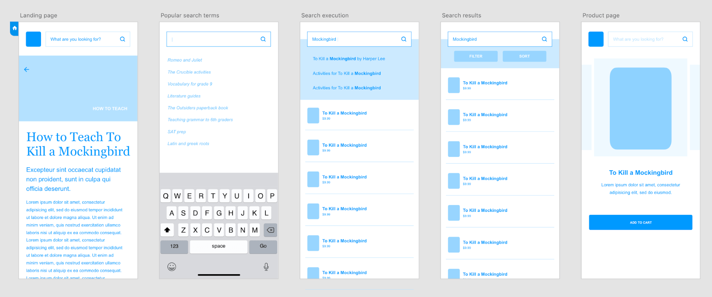
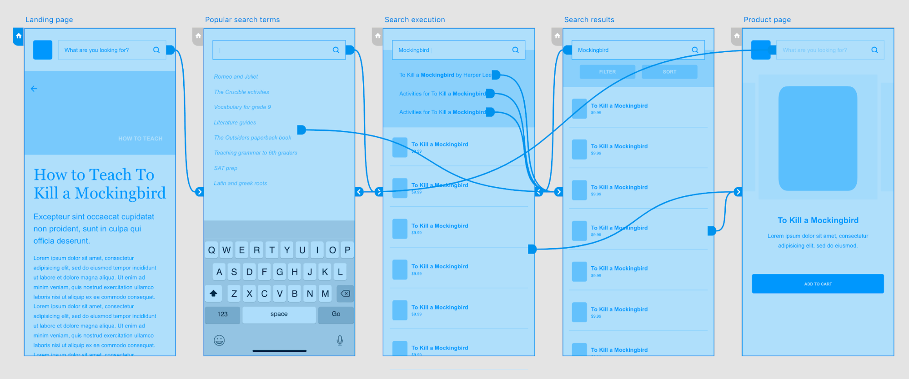
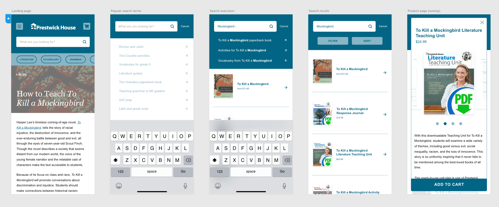
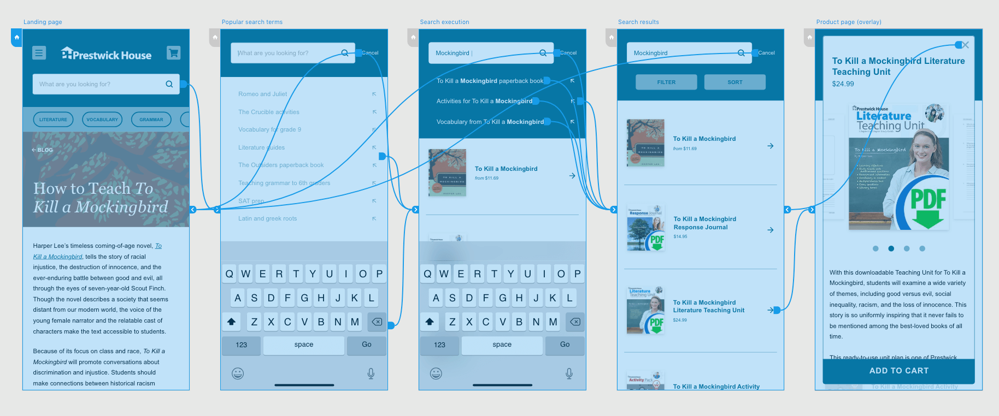
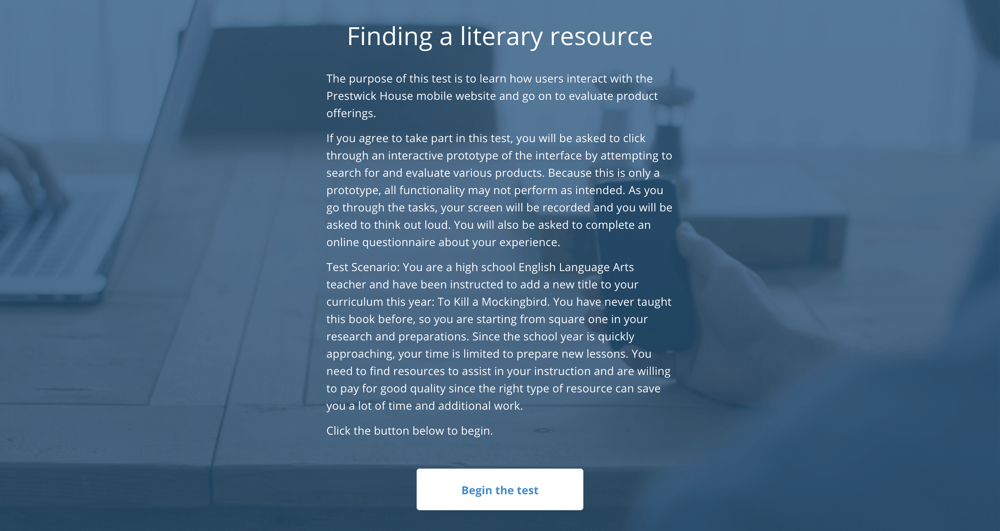
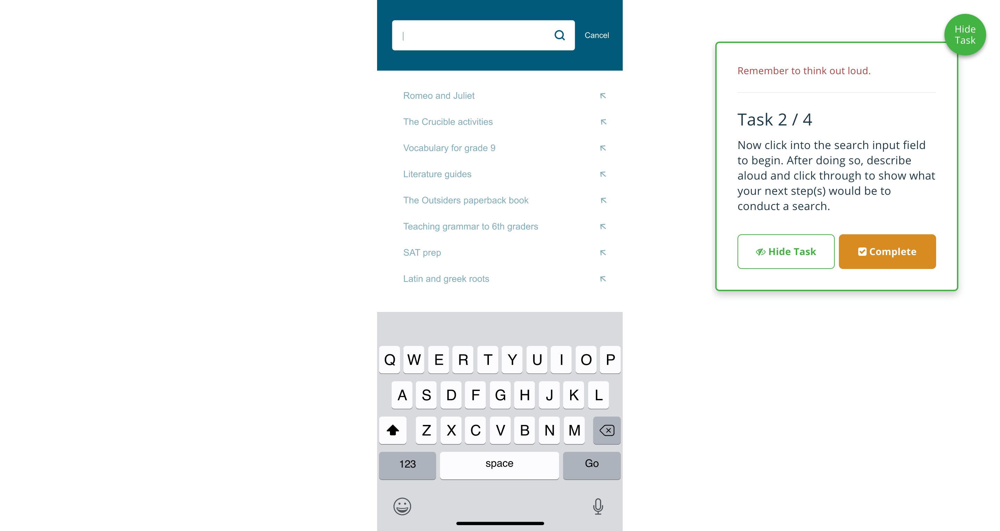
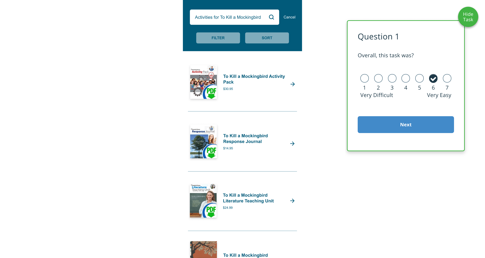
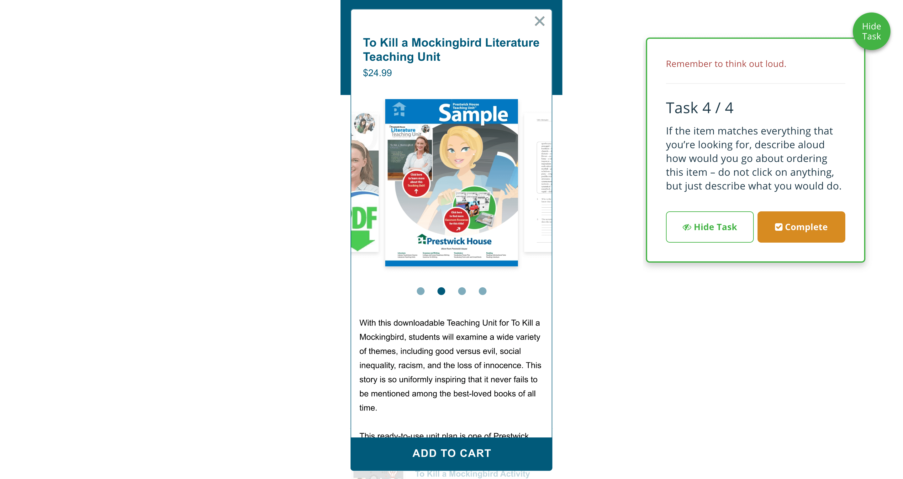

UX Design
After ideation through sketching, Adobe XD was used to create lo- and hi-fidelity wireframes. These frames were mapped to create prototypes at the same level of fidelity to demonstrate the critical path for a user conducting a search, locating a product, and evaluating that product prior to purchase. As you can see from the images below, the design of these frames changed over time. The hi-fidelity prototype was eventually used during usability testing.

Lo-fidelity wireframe

Lo-fidelity prototype

Hi-fidelity wireframe

Hi-fidelity prototype
Usability Testing
Before any development is to begin on design work, proper testing needs to be conducted to ensure that the intended enhancements meet the needs of the system's users. Christopher has experience conducting remote moderated and unmoderated tests using a number of different platforms including UserTesting and Validately (shown below).

Setting the test scenario

Participants are shown a task

Post-task simple ease question

Participants are asked to think aloud
User Research
Before any sketches are drawn, wireframes are developed, and prototypes are mapped, Christopher's process calls for a deep understand of why they are being created and who they are being crafted for. This is done through user research, more specifically through the creation of user personas, task analysis, user journey maps, and more. A selection of these are shown below; samples like data sampling, competive analysis, and other reporting is available upon request.
Participants are asked to think aloud